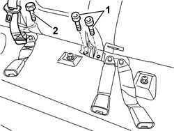
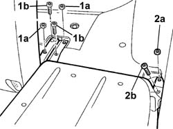
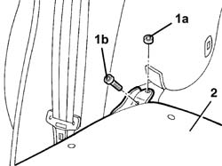

7050A14 SPLIT REAR SEAT ASSEMBLY - R+R
- Path
- Procedures > 70 FITTINGS > 7050 REAR SEATS > 7050A REAR SEAT ASSEMBLY > 7050A14 SPLIT REAR SEAT ASSEMBLY - R+R
- Kind
- repair procedure (removal / refitting; the operation number is the code)
- Applies to
- all engines; all production periods
- Interactive page
- https://sloeber94.github.io/elrnDB-aGt/en/#/125001938
Applies to: all engines; all production periods
 Removing
Removing
 Refitting
RefittingOp. 7050A22 REAR SEAT CUSHION - R+R
(right and left)
Op. 7040B10 LOAD PLATFORM (LUGGAGE PLATFORM) TRIM - R+R
1. Undo the front bolts fixing the backrest to the floor.
2. Undo the bolt fixing the end of the middle rer seat belt.

Applies to: all engines; all production periods
Lower the squab.
1. Undo the middle nuts (1a) and bolts (1b) fixing the backrest to the floor.
2. Undo the left side nut (2a) and bolt (2b) fixing the backrest to the floor.

Applies to: all engines; all production periods
1. Undo the right side nut (1a) and bolt (1b) fixing the backrest to the floor.
2. Remove the squabs.

Applies to: all engines; all production periods
Refitting
RemovingCheck that the squabs are not damaged.
Position the squabs.
Tighten the middle and side nuts and bolts fixing the backrests to the floor.
Tighten the middle and side bolts fixing the backrests to the floor.
 | Fastening | Component | Ø | Value (daNm) |
|---|---|---|---|---|
- | Nut | REAR SEAT BACKREST JOINTS. | M10 x 1.25 | 35 |
| Fastening | Component | Ø | Value (daNm) |
|---|---|---|---|---|
- | Bolt | REAR SEAT BACKREST JOINTS. | M10 x 1.25 | 35 |
Lift the squab.
Tighten the front bolts fixing the backrests to the vehicle floor.
| Fastening | Component | Ø | Value (daNm) |
|---|---|---|---|---|
- | Bolt | REAR SEAT BACKREST JOINTS. | M10 x 1.25 | 35 |
If necessary, adjust the striker .
Op. 7050A45 STRIKER OF ONE SPLIT REAR SEAT SQUAB FASTENING RELEASE DEVICE ONE LH OR RH R R
Position the end of the middle rear seat belt and fasten it using the bolt.
| Fastening | Component | Ø | Value (daNm) |
|---|---|---|---|---|
- | Bolt | REAR SEAT BELT END. | - | 4 |
Op. 7050A22 REAR SEAT CUSHION - R+R
(right and left).
Topics linked from this page (4)
- 7040B10 LOAD PLATFORM (LUGGAGE PLATFORM) TRIM - R+R
- 7040H80 PARCEL RACK
- 7050A22 REAR SEAT CUSHION - R+R
- 7050A45 STRIKER OF ONE SPLIT REAR SEAT SQUAB FASTENING RELEASE DEVICE ONE LH OR RH R R
Topics that link to this page (19)
- S60 REAR CREAKING
- 5010C60 LH OR RH REAR AIR OUTLET -ONE- R R
- 5505C82 WIRING incorporated in REAR BUMPER RR
- 5540E10 REAR FOG LAMP (ONE), LH OR RH - R+R
- 5550D24 REVERSING LIGHT - R+R
- 5570T94 REAR TWEETER (ONE), LH OR RH - R R
- 5570T96 REAR SIDE SPEAKER - R R
- 7035C14 FIXED REAR SIDE WINDOW ONE LH OR RH R R INCLUDES CLEANING OF HOUSING
- 7040B06 SIDE TRIM (ONE) LH OR RH, LOAD COMPARTMENT/LOAD PLATFORM - R R
- 7040H10 ROOF PANEL LINING - R R
- 7040H38 CENTRAL PILLAR UPPER ELEMENT - R R
- 7040H42 REAR PILLAR TRIM - R R
- 7040H50 REAR PANEL - R R
- 7040L18 PASSENGER COMPARTMENT FLOOR REAR CARPET - R R
- 7065A12 FRONT SEAT BELT (ONE), LH OR RH, WITH PRETENSIONER ON WHEEL - R R
- 7065A18 HEIGHT ADJUSTER OF ON FRONT SEAT BELT ONE LH OR RH R R
- 7065B10 L/H OR R/H REAR SAFETY BELT (ONE) - R+R
- 7065B40 BRACKET FOR REAR SEAT BELT WHEEL (ONE) LH OR RH - R R
- 7210E66 REAR BUMPER